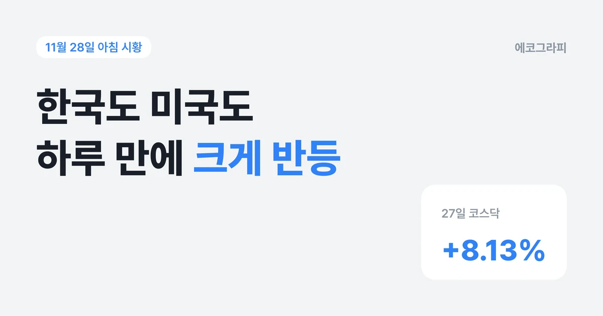
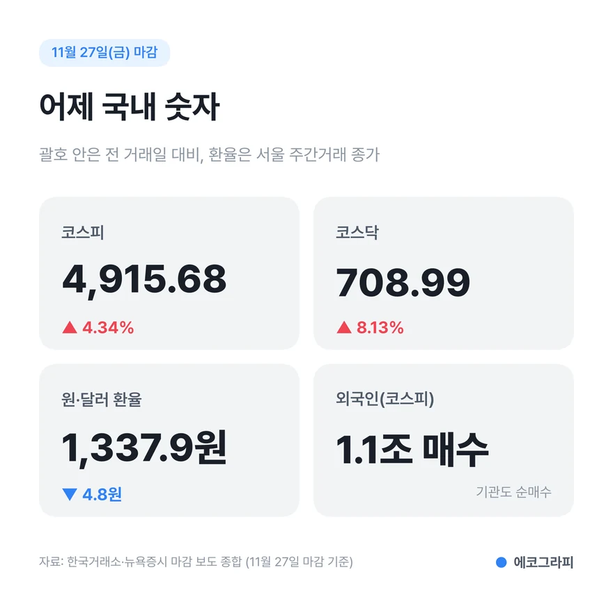
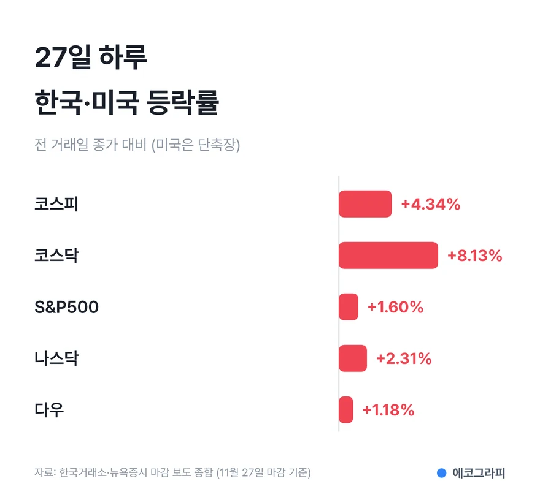
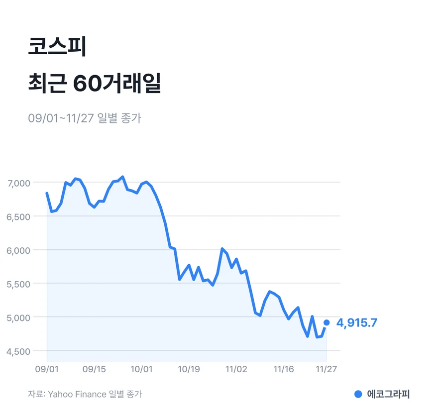
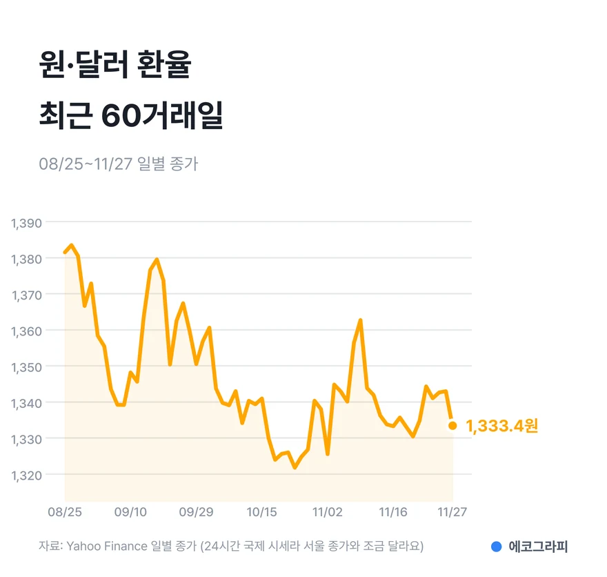
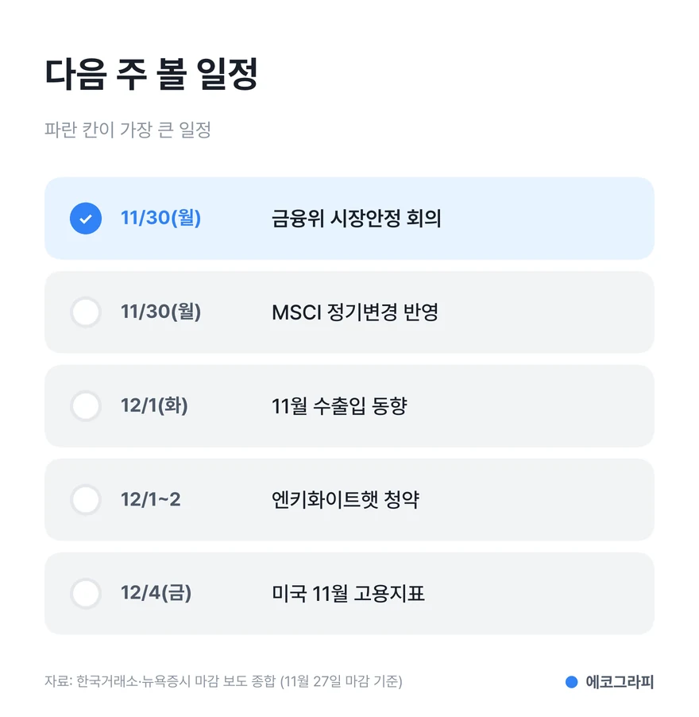

27일 코스피는 204.47포인트(4.34%) 오른 4,915.68로 마쳤어요. 0.37% 오른 4,728선에서 출발해 장 초반 잠깐 밀렸지만, 이후 오름폭을 계속 키웠어요. 코스닥은 53.28포인트(8.13%) 오른 708.99예요. 오전 10시 22분쯤엔 코스닥에 매수 사이드카가 걸렸어요. 장 마감 뒤 상황은 어제 저녁 속보 글에 자세히 정리했어요.

코스피에서 외국인은 약 1조 1,298억 원, 기관은 약 2,388억 원을 순매수했어요. 개인은 약 1조 7,746억 원을 팔았어요. 코스닥에서도 외국인과 기관이 함께 샀어요. 외국인과 기관이 양쪽 시장에서 동시에 '사자'에 나선 건 최근 들어 드문 일이에요.
대형주는 삼성전자 179,100원(+4.55%), SK하이닉스 1,110,000원(+5.41%)이 올랐고, 삼성SDI(+8.25%)·미래에셋증권(+15.87%)의 오름폭이 컸어요. 코스닥에선 에코프로·에코프로비엠·레인보우로보틱스가 10% 넘게 올랐어요.
27일(현지) 뉴욕 증시는 추수감사절 다음 날이라 오후 1시에 일찍 문을 닫았어요. 짧은 장이었지만 세 지수가 모두 올랐어요.
이번 주 전체로 보면 S&P500이 약 5.6%, 나스닥이 약 6.7%, 다우가 약 5.5% 올랐어요. 다우는 약 4년 만에 가장 큰 주간 상승이라는 보도가 나왔어요. 마이크론·마벨이 7% 넘게, AMD·브로드컴도 오르는 등 AI·반도체주가 반등을 이끌었어요. 다만 휴일 직후라 거래량은 적었어요.


코스피는 9월 7,000선 위까지 올랐다가 10월 들어 큰 폭으로 내려왔고, 11월에도 20일·23일·25일 큰 하락을 거치며 4,700선 아래까지 밀렸어요. 어제 반등으로 지난주 금요일(20일) 종가 4,869.96보다 약 0.9% 높은 곳에서 한 주를 마쳤어요. 하루 4~6%씩 오르내린 날이 많았던 만큼, 다음 주에도 외국인 매수가 이어지는지가 관심이에요.

환율은 10월 이후 대체로 1,320~1,360원 사이에서 움직이고 있어요. 외환 딜러들도 당분간 이 범위 안에서 오르내릴 거라는 전망을 내놨어요.

이번 주 흐름은 24일 급등, 25일 급락 속보와 어제 아침 시황에서 이어서 볼 수 있어요. 내일은 한 주 정리 글을 올려요.
추수감사절 다음 날(블랙프라이데이)은 관례적으로 오후 1시(현지)에 거래를 마쳐요. 한국 시간으로는 토요일 새벽 3시예요.
코스피 외국인 순매수가 하루 1조 원을 넘는 건 자주 있는 일은 아니에요. 보도에 따르면 9월 초 이후 가장 큰 규모였어요. 다만 하루 수급만으로 추세를 판단하긴 어려워요.
달러로 환전할 때 원화가 조금 덜 들어요. 반대로 이미 가진 달러 자산의 원화 평가액은 줄어요.
알 수 없어요. 이번 주에만 하루 4~6%씩 오르내린 날이 여러 번 있었어요. 이 글은 매수·매도를 권하지 않아요.
※ 2026년 11월 기준으로 정리한 글입니다. 세율·제도는 바뀔 수 있으니 거래 전 증권사·국세청 안내를 한 번 더 확인하세요. 특정 종목·상품의 매수·매도 권유가 아닙니다.